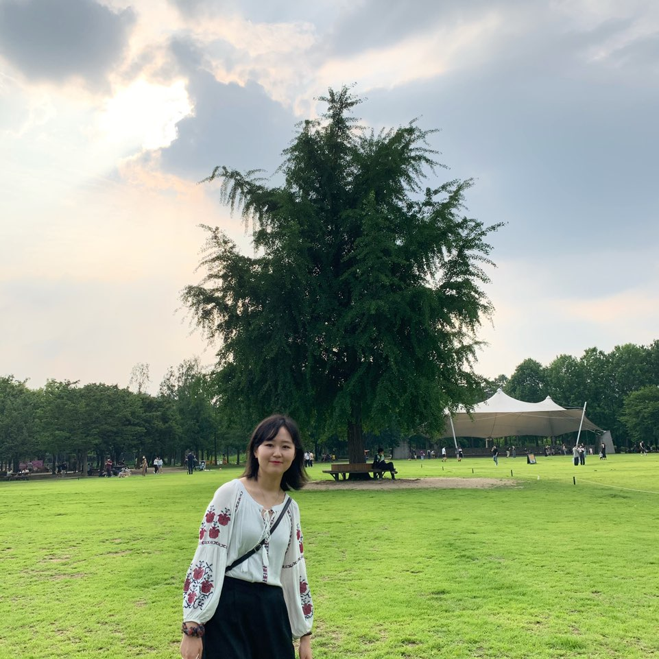

🌍 LCP(지부장)_권민정(영여영문학과 19학번)
AIESEC에서의 여정.
1920.1Term: iGX Member
1920.2Term: MKT Member
2021.1Term: LCP/ TM LCVP
2021.2Term: LCP
🗣 “AIESEC은 청년과 열정이라는 자격요건만으로
진입장벽 없는 NGO 및 기업 경험을 할 수 있는 기회의 장이자,
적극적인만큼 얻어가는 것이 많아지는 단체입니다.
뜻 깊은 대학생활을 원한다면, 고민없이 함께 해주세요! ”
🌍 TM / oGX LCVP_전효림(문헌정보학과 19학번)
AIESEC에서의 여정.
1920.Term: TM Member
2021.1Term: MKT / oGX LCVP
2021.2Term: TM / oGX LCVP
🗣 “ 가벼운 마음으로 지원한 AIESEC은 지금 저의 학교 생활에 엄청난 부분을 차지하는 활동입니다.
여러분도 저처럼 AIESEC에 지원하셔서 많은 경험을 얻으실 수 있으면 좋겠습니다! ”
🌍 F & L LCVP_강은비(심리학과 19학번)
AIESEC에서의 여정.
1920.2Term: oGX Member
2021Term: F &L LCVP
🗣 “좋은 사람이 되는 것은 좋은 사람들과 좋은 경험을 나누며 성장하는 것에서 비롯된다.
AIESEC에서 그 가치를 실현시키는 리더가 되어봅시다 :) ”
🌍 MKT LCVP / oGX TL_윤준형(문헌정보학과 19학번)
AIESEC에서의 여정.
1920.Term: TM Member
2021.2Term: MKT LCVP / oGX TL
🗣 “ 지난 1년 AIESEC 활동을 하며 정말 좋은 사람들과 좋은 추억을 쌓을 수 있었습니다.
여러분도 함께 AIESECer로 활동하며 좋은 추억 만들어 가셨으면 좋겠습니다! ”
*TL은 Team Leader의 약자입니다. 이번 2020년도 2학기에는 oGX(해외교류중개부서)의 FM(부서 회의)은 oGX TL이신 윤준형씨에 의해 진행, 관리될 예정입니다.